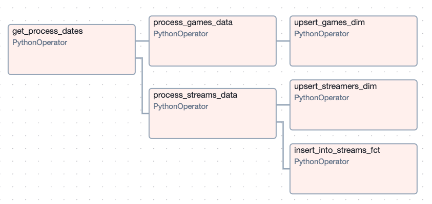

Personal Projects ü뮂Äçüíª
Cryptocurrency Trading Data
This was my first personal coding project, inspired by my interest in financial markets. I wanted to create a script to pull trading data, and below is a sample chart of the data I aimed to collect.
After some reasearch, I discovered Coinbase offers a free API. As a Python beginner, I also wanted to dive into object-oriented programming with classes. The result was the following:
While I would design the code differently today, this project taught me a lot about working with classes. Although I took a break after completing it, if I revisit this project, I'd like to add technical indicators and backtesting capabilities to analyze profitability.
NLP Projects
After the release of ChatGPT and other LLMs, I wanted to explore how I could integrate them into my code. For this project, I used a pretrained sentiment analysis model from Hugging Face. Once downloaded, I could input text and get a positive/negative label along with a score. This could be applied to analyze sentiment on social media and reviews on a site. Setting it up was surprisingly quick and easy, though it could benefit from some fine-tuning. I also built a UI to interact with the model using Gradio.

GitHub Actions
This small repo was my attempt to learn and experiment with GitHub Actions. Although I don't come from a software engineering background, I understand the importance of testing and QA. After learning about GitHub Actions and its role in CI/CD, I decided to dive deeper. I created a simple function and unit test to experiment with, after watching these helpful YouTube Tutorials. After completing this project, I was impressed by how powerful GitHub Actions is and how it could greatly benefit teams that manage code.
Twitch Data Pipeline
This was my latest project, an end-to-end data pipeline that tracks Twitch viewer trends over time. For anyone unfamiliar with Twitch, it's a video game streaming platform where people can broadcast themselves playing games, and others can watch in real-time. I landed on Twitch as my data source after exploring a few ideas, mainly because they offer a free public API. It felt like a great opportunity to build something real using live data.
The concept was straightforward. Twitch has a section that shows how many viewers are watching each game in real-time. I wanted to track that over time to uncover trends, like which games are consistently popular or which ones are rising or falling in popularity.
I had also heard of Airflow for managing pipelines, so I decided to integrate it as well. The initial plan was to pull Twitch data every few hours, store it for downstream visualizations, and orchestrate everything with Airflow. It sounded simple, but in practice, it wasn’t.
With the idea in place, I started by building a custom Python package to pull data from the Twitch API. I then created a separate repo for the pipeline, which would use that package and store the data. At the time, I was eager to learn Snowflake, so I chose it as my data warehouse.
Writing the Twitch package was actually the easiest part. I signed up for a Twitch developer account, figured out authentication, and began pulling data within a few hours. One gotcha was realizing that the 'secret' generated on Twitch isn’t used for direct API access, but rather to request a temporary token, which is what the API actually expects. Once the Twitch package was in a good spot, I created a Snowflake account. Getting up to speed with Snowflake took only a few hours.
I then attempted to run the full pipeline using Airflow on my local MacBook. That quickly became a mess due to dependency conflicts (my MacBook is a bit dated). After hitting a wall, I pivoted to using AWS EC2. I was already familiar with SSH and remote development, so it felt like the right move. Setting up an EC2 instance took a few more hours—creating the account, configuring security rules, and getting everything running.
I finally got Airflow running on an EC2 instance, executing the pipeline and saving Twitch data into Snowflake. But I ran into another issue. As soon as I logged out, Airflow stopped, which was a big problem since I didn’t want to keep my local machine logged in. At the time, I hadn’t yet learned Docker, so I tried (unsuccessfully) to set up Airflow as a background service on Ubuntu. That’s when I discovered Astronomer, a cloud-based managed Airflow platform. It had everything I needed, so I spent a full day learning their CLI and project structure, then migrated my code over. Once deployed, the pipeline ran automatically every few hours, and for the first time, everything ran smoothly.
While the pipeline worked great, I noticed the costs were adding up. Astronomer’s free tier expired, and running the pipeline cost about $10/day on Astronomer and another $10/day for Snowflake compute. So, I started exploring alternatives. While making some code tweaks, I realized my Astronomer project still ran even after logging out of EC2. That was a lightbulb moment for me. I figured out that Docker was keeping everything running in the background. I’d heard of Docker before, but never considered it as a solution. With this discovery, I decided to move everything off Astronomer and Snowflake. Instead, I’d run Astronomer locally on my EC2 instance and use AWS S3 for storage. This change saved me a ton of money, as running the EC2 instance only cost around $0.10 per hour, or $2.40 per day.
Setting up the S3 bucket was straightforward, but I had to figure out how to save data to S3 in Parquet format. I discovered that Astronomer’s S3 hook had built-in functions for this, so I spent some time learning how to use them and built custom helper functions to save the data there. With the raw data saved in S3, I chose Apache Iceberg tables for my production data layer, as I was familiar with Delta files, and Iceberg seemed like a good fit. However, I didn’t realize I’d need additional AWS services to set up the Iceberg tables. I learned about AWS Athena, a serverless compute service, and used it to create the tables. Then, I used AWS Glue to catalog the tables, which was necessary for pyiceberg to interact with them. Once everything was set up, I created a separate DAG to transform the raw Parquet data and load it into Iceberg. Here’s what the transformation DAG looks like now:
After the pipeline was running smoothly for a few days, the final step was visualizing the data. I heard good things about Grafana and liked the look of their dashboards, so I decided to give it a try. I had to get up to speed on the platform, but found it fairly intuitive. Here’s what the dashboard looks like:
The top chart displays a time series of average concurrent viewers per day, while the bottom-left table shows the overall average concurrent viewers for the selected time range, along with a rank. The bottom-right table highlights the top streamers for each game. The time range can be adjusted using the time period field in the top-right corner, and users can filter visible games by either name or rank. Without these filters, the dashboard can slow down due to the 6K+ games on Twitch. These filters help speed up rendering while allowing users to search for less popular games by adjusting the game name and clearing the rank fields.
There’s still plenty of room for improvement in the dashboard, like refining the ranking methodology, but I’m happy with how the project turned out for now. I’m planning to shift my focus to other areas of interest. If you’re still reading, thanks for sticking with me! I’ve learned a ton through this process, and it really reinforced how valuable learning by doing can be. I’m definitely a more confident coder after completing this project.